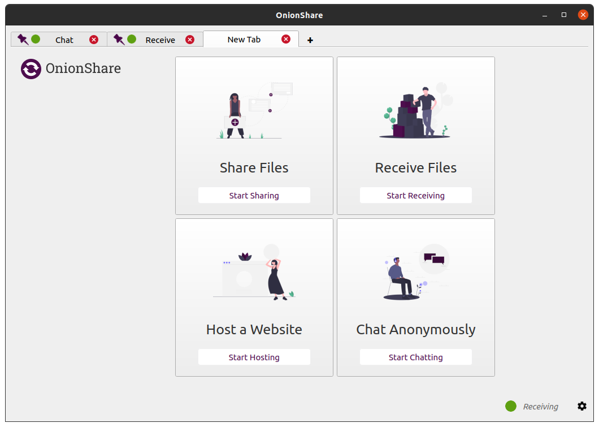
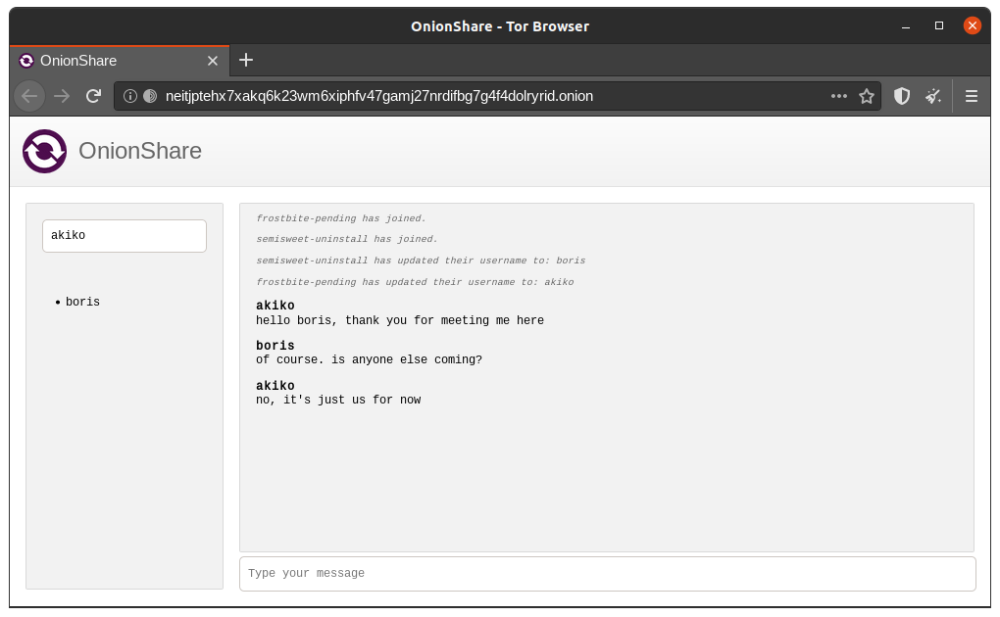
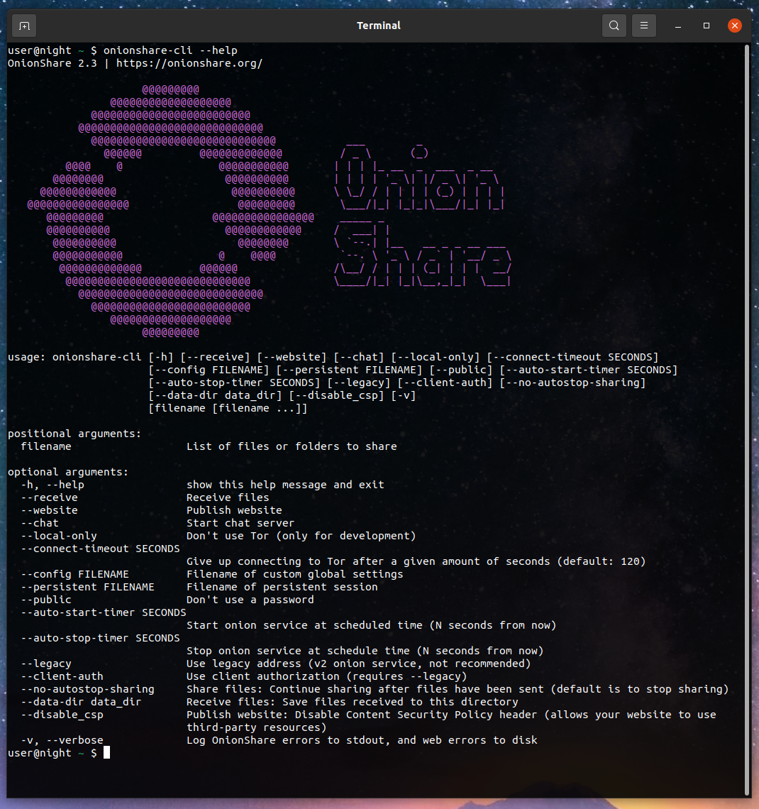
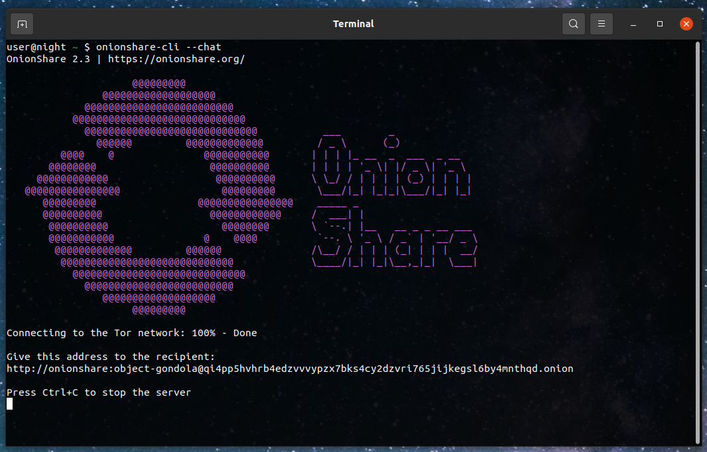

OnionShare 2.3 adds tabs, anonymous chat, better command line support, and quite a bit more
After a ridiculously long sixteen months (or roughly ten years in pandemic time) I'm excited to announce that OnionShare 2.3 is out! Download it from onionshare.org.
This version includes loads of new and exciting features which you can read about in much more detail on the brand new OnionShare documentation website, docs.onionshare.org. For now though I'm just going to go over the major ones: tabs, anonymous chat, and better command line support.
Doing all the things at once
In the olden days, OnionShare only did one thing: let you securely and anonymously share files over the Tor network. With time we added new features. You could use it as an anonymous dropbox, and then later to host an onion site.
But what if you wanted to, for example, run your own anonymous dropbox as well as share files with someone? If your OnionShare was busy running a service, you couldn't run a second service without stopping the first service. This is all fixed now thanks to tabs.

Now when you open OnionShare you are presented with a blank tab that lets you choose between sharing files, receiving files, hosting a website, or chatting anonymous. You can have as many tabs open as you want at a time, and you can easily save tabs (that's what the purple thumbtack in the tab bar means) so that if you quit OnionShare and open it again later, these services can start back up with the same OnionShare addresses.
So with OnionShare 2.3 you can host a few websites, have your own personal anonymous dropbox, and securely send files to people whenever you want, all at the same time. Under the hood, the addition of tabs also makes OnionShare connect to the Tor network faster, especially if you're using a bridge.
Secure, anonymous, ephemeral chat rooms that don't log anything
Another major new feature is chat. You start a chat service, it gives you an OnionShare address, and then you send this address to everyone who is invited to the chat room (using an encrypted messaging app like Signal, for example). Then everyone loads this address in a Tor Browser, makes up a name to go by, and can have a completely private conversation.

If you're already using an encrypted messaging app, what’s the point of an OnionShare chat room? It leaves fewer traces.
If, for example, you send a message to a Signal group, a copy of your message ends up on each device (the devices, and computers if they set up Signal Desktop of each member of the group). Even if disappearing messages is turned on it’s hard to confirm all copies of the messages are actually deleted from all devices, and from any other places (like notifications databases) they may have been saved to. OnionShare chat rooms don’t store any messages anywhere, so the problem is reduced to a minimum.
OnionShare chat rooms can also be useful for people wanting to chat anonymously and securely with someone without needing to create any accounts. For example, a whistleblower can send an OnionShare address to a journalist using a disposable e-mail address, and then wait for the journalist to join the chat room, all without compromising their anonymity.
Because OnionShare relies on Tor onion services, connections between the Tor Browser and OnionShare are all end-to-end encrypted (E2EE). When someone posts a message to an OnionShare chat room, they send it to the server through their E2EE onion connection. The OnionShare server then forwards the message to all other members of the chat room through the other members' E2EE onion connections, using WebSockets. OnionShare doesn’t implement any chat encryption on its own. It relies on the Tor onion service’s encryption instead.
Huge thanks to Saptak Sengupta for developing the anonymous chat feature (doing the bulk of the work in like a single day (!), in the midst of a hacker con in Goa, India last March).
OnionShare from the command line

OnionShare 2.3 finally de-couples the command line and the graphical versions. You can install onionshare-cli on any platform, including headless Linux servers, using pip:
pip3 install --user onionshare-cli
You also need to have tor installed to use it from your package manager, or Homebrew if you're using macOS.
It's simple to use. For example, here's how you start a chat server:

I hope you enjoy the new version of OnionShare!
Note February 21, 2021: OnionShare 2.3 for Linux will be available in Flathub after this pull request is reviewed and merged, so hang tight. In the meantime, it's already available in Snapcraft (though it logs analytics), or you can install the .flatpak file directly from onionshare.org/dist/2.3.
Update February 22, 2022: Version 2.3 had a bug where chat was broken :( but we just released version 2.3.1 which fixes it! :).
Update February 23, 2020: The Flatpak package is live! Linux users get it from Flathub.